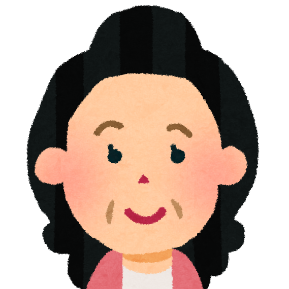

一通りのことをお伝えしましたが、ご家族としてはいかがですか？
...。そうですね、正直戸惑っています。家族は兄と私だけですが、兄は遠方で母親のことはお前に任すと言われてしまいました。私個人としては、もう高齢ですし、痛い苦しい思いをしてまで手術させるのは可哀そうというか...。
娘さんとしては、手術せずにということですね。この場合、痛みのコントロールが主な治療になってくると思います。
はい。...ただ、母は人一倍向上心が強く、最後まであきらめるなというのが口癖でした。母のことを考えると、少しでもよくなる可能性があるのなら手術を希望するかもしれません。...私だけでは決められません。ケアマネさんにも同席してもらいたいのですが。
分かりました。もちろんです。それでは、次回もう一度ケアマネさんも一緒に◯◯さんの治療について考えていきましょう。